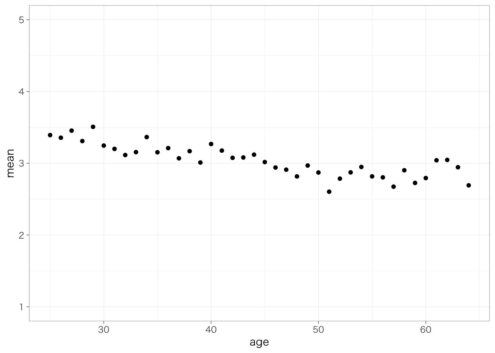
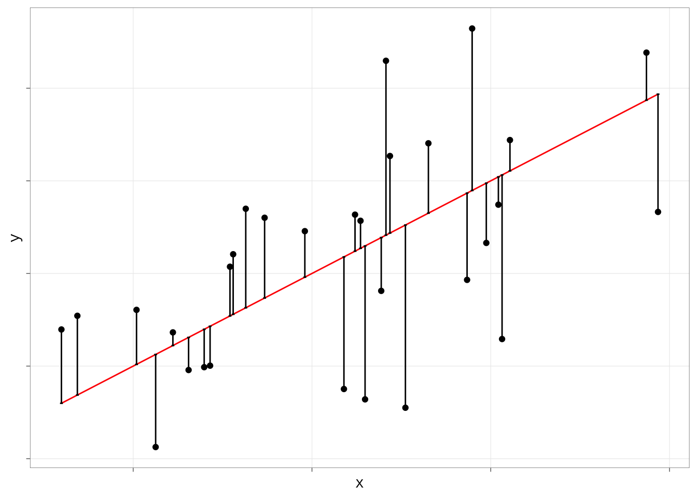

7.2 独立変数がカテゴリ変数の場合
7.2.1 2値のカテゴリ
線形回帰分析では、連続変数だけではなく、カテゴリ変数も扱うことができる。その例としてまず、性別によって賃金がどの程度異なるのかを知りたいとする。このとき、（無理やり）散布図を書くと、次のようになる。分布がわかりやすいように点は水平方向に少し散らして表示している。
piaac %>%
ggplot(aes(x = gender, y = wage)) +
geom_point(shape = 1, position = position_jitter(w = 0.3, h = 0)) +
ylim(0, 10000)
ここで得られた男性の平均値と女性の平均値をそれぞれ散布図に書き入れてみたのが次の図である。実線が男性の平均値、点線が女性の平均値を表している（コードはやや複雑なので、とくに実行する必要はありません）。
meandata <- piaac %>%
group_by(gender) %>%
summarize(mean_wage = mean(wage))
piaac %>%
ggplot(aes(x = gender, y = wage)) +
geom_point(shape = 1, position = position_jitter(w = 0.3, h = 0)) +
geom_hline(yintercept = meandata$mean_wage[1], lty = 2, color = "brown1") +
geom_hline(yintercept = meandata$mean_wage[2], color = "deepskyblue") +
annotate("text", x = 1.5, y = 1000, label = round(meandata$mean_wage[1], 1), color = "brown1") +
annotate("text", x = 1.5, y = 2600, label = round(meandata$mean_wage[2], 1), color = "deepskyblue") +
ylim(0, 10000)
いま、男性であれば1、女性であれば0をとる変数\(x\)を考えよう。このように、カテゴリ変数のカテゴリを区別するために便宜的に0/1の値を振った変数のことを、ダミー変数 dummy variableという。このとき、性別による賃金の違いを表す回帰式は次のようになる：
\[ y = \beta_0 + \beta_1x \]
回帰式のかたちは先ほどと同じとなる。傾き\(\beta_1\)は、女性（0）とくらべて男性（1）がどの程度賃金が高いのかを示している。実際、この係数を推定してみよう。
piaac <- piaac %>%
mutate(male_d = case_when(
gender == "男性" ~ 1,
gender == "女性" ~ 0
))reg_res <- lm(data = piaac, wage ~ male_d)
summary(reg_res)##
## Call:
## lm(formula = wage ~ male_d, data = piaac)
##
## Residuals:
## Min 1Q Median 3Q Max
## -1733.1 -612.4 -329.3 368.6 7438.4
##
## Coefficients:
## Estimate Std. Error t value Pr(>|t|)
## (Intercept) 1339.12 31.03 43.16 <2e-16 ***
## male_d 856.38 42.65 20.08 <2e-16 ***
## ---
## Signif. codes: 0 '***' 0.001 '**' 0.01 '*' 0.05 '.' 0.1 ' ' 1
##
## Residual standard error: 1112 on 2726 degrees of freedom
## Multiple R-squared: 0.1289, Adjusted R-squared: 0.1285
## F-statistic: 403.2 on 1 and 2726 DF, p-value: < 2.2e-16male_dというのが、性別が男性のときに1、女性のときに0をとる変数である。この係数は傾き\(\beta_1\)に対応し、切片（Intercept）は切片\(\beta_0\)に対応する。つまり、推定された式は次のようになる：
\[ y = 1339 + 856x \]
つまり、女性（x = 0）とくらべて男性（x = 1）の賃金は856円高いということを意味している。
この値が、先ほど散布図に示した男性の平均値と女性の平均値の差に一致していることを確認しよう。すなわち、2値のカテゴリ変数を独立変数として用いる場合、傾きの値は、2つのカテゴリの平均値の差を表している。
7.2.2 3値以上のカテゴリ
カテゴリが3値以上の場合はどうだろう？これも、基本的には同じふうに考えることができる。
piaac %>%
filter(is.na(educ) == FALSE) %>%
ggplot(aes(x = educ, y = wage)) +
geom_point(shape = 1, position = position_jitter(w = 0.3, h = 0))
中学卒を基準として、高校卒（高校卒 - 中学卒）、短大高専卒（短大高専卒 - 中学卒）、大学大学院卒（大学大学院卒 - 中学卒）だとどれくらい賃金が高いのかを推定することになる。
piaac <- piaac %>%
mutate(educ_d2 = if_else(educ == "高校", 1, 0)) %>%
mutate(educ_d3 = if_else(educ == "短大高専", 1, 0)) %>%
mutate(educ_d4 = if_else(educ == "大学大学院", 1, 0)) reg_res <- lm(data = piaac, wage ~ educ_d2 + educ_d3 + educ_d4)
summary(reg_res)##
## Call:
## lm(formula = wage ~ educ_d2 + educ_d3 + educ_d4, data = piaac)
##
## Residuals:
## Min 1Q Median 3Q Max
## -1859.1 -690.8 -310.8 387.7 8184.0
##
## Coefficients:
## Estimate Std. Error t value Pr(>|t|)
## (Intercept) 1431.36 74.90 19.110 <2e-16 ***
## educ_d2 103.99 83.35 1.248 0.212
## educ_d3 112.34 86.44 1.300 0.194
## educ_d4 927.69 84.04 11.039 <2e-16 ***
## ---
## Signif. codes: 0 '***' 0.001 '**' 0.01 '*' 0.05 '.' 0.1 ' ' 1
##
## Residual standard error: 1126 on 2724 degrees of freedom
## Multiple R-squared: 0.1072, Adjusted R-squared: 0.1062
## F-statistic: 109 on 3 and 2724 DF, p-value: < 2.2e-16それぞれの係数は、基準カテゴリ（今回なら中学卒）と比べて、それぞれ高校、短大高専、大学大学院卒だとどれくらい賃金の平均値が高いのかを表している。標準誤差やp値のみかたについてはどれも同じ。
7.2.3 変数がfactorであれば自動でカテゴリとして投入される
先ほどまでは、0または1の値が入ったダミー変数を自分で作っていた。独立変数の型がカテゴリの場合には、Rが自動で先ほどのようなダミー変数を勝手に作って投入してくれる。
reg_res <- lm(data = piaac, wage ~ educ)
summary(reg_res)##
## Call:
## lm(formula = wage ~ educ, data = piaac)
##
## Residuals:
## Min 1Q Median 3Q Max
## -1859.1 -690.8 -310.8 387.7 8184.0
##
## Coefficients:
## Estimate Std. Error t value Pr(>|t|)
## (Intercept) 1431.36 74.90 19.110 <2e-16 ***
## educ高校 103.99 83.35 1.248 0.212
## educ短大高専 112.34 86.44 1.300 0.194
## educ大学大学院 927.69 84.04 11.039 <2e-16 ***
## ---
## Signif. codes: 0 '***' 0.001 '**' 0.01 '*' 0.05 '.' 0.1 ' ' 1
##
## Residual standard error: 1126 on 2724 degrees of freedom
## Multiple R-squared: 0.1072, Adjusted R-squared: 0.1062
## F-statistic: 109 on 3 and 2724 DF, p-value: < 2.2e-16それぞれ、「educ高校」は中学卒と比べて高校卒の賃金はいくら高いか、「educ短大高専」は中学卒と比べて短大高専卒の賃金はいくら高いか、「educ大学大学院」は中学卒と比べて大学大学院卒の賃金はいくら高いか、をそれぞれ表す。
ただし、基準カテゴリは一番最初のものが勝手に選ばれるので、たとえば高校を基準にしてその他を比較したい、と思ったときには、自分でカテゴリの順序を変更しておく必要がある。
piaac <- piaac %>%
mutate(educ_reorder = factor(educ,
levels = c("高校", "中学", "短大高専", "大学大学院"),
labels = c("高校", "中学", "短大高専", "大学大学院")))
reg_res <- lm(data = piaac, wage ~ educ_reorder)
summary(reg_res)##
## Call:
## lm(formula = wage ~ educ_reorder, data = piaac)
##
## Residuals:
## Min 1Q Median 3Q Max
## -1859.1 -690.8 -310.8 387.7 8184.0
##
## Coefficients:
## Estimate Std. Error t value Pr(>|t|)
## (Intercept) 1535.357 36.571 41.983 <2e-16 ***
## educ_reorder中学 -103.992 83.352 -1.248 0.212
## educ_reorder短大高専 8.351 56.562 0.148 0.883
## educ_reorder大学大学院 823.702 52.818 15.595 <2e-16 ***
## ---
## Signif. codes: 0 '***' 0.001 '**' 0.01 '*' 0.05 '.' 0.1 ' ' 1
##
## Residual standard error: 1126 on 2724 degrees of freedom
## Multiple R-squared: 0.1072, Adjusted R-squared: 0.1062
## F-statistic: 109 on 3 and 2724 DF, p-value: < 2.2e-16